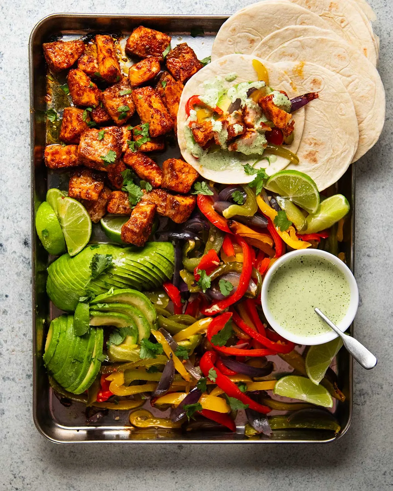

Salmon Fajita Spread

Description
Here is a big Fajita dinner spread that's all cooked in the oven at the same time!
Caramelised cubes of salmon heavily seasoned with a Fajita spice blend,
colourful fajita vegetables and a pile of steamy warm tortillas,
just add sliced avocado and make a simple taco sauce while they're in the oven.
I used my new Creamy Jalαpeño Sauce but if that's out of reach or you're worried about spiciness (it's got a little zing),
either use my Instant Pink Taco Sauce or just plain sour cream.
Ingredients
Fajita Seasoning
- 600g / 1.2lb skinless salmon fillets, cut into 2.5cm/1" cubes
- 1 1/2 tbsp extra virgin olive oil
- 2 tsp smoked paprika (or regular paprika)
- 1 tsp EACH garlic, onion, cumin powder
- 1/2 tsp dried oregano
- 3/4 tsp cooking salt / kosher salt
- 1 tsp (tightly packed) brown sugar
- 1/4 tsp cayenne pepper (optional)
Fajita Vegetables
- 3 capsicums (1 each red, yellow, green), deseeded, cut into 0.75cm strips
- 1 red onion, cut into 0.75cm wedges
- 1 1/2 tbsp extra virgin olive oil
- 1 garlic clove, minced
- 1/2 tsp cooking salt / kosher salt
Fajita Sauce Options
- Creamy Jalapeno Sauce
- Pink Taco Sauce (2 ingredients!)
- Sour cream
Serving
- 12–16 taco-size tortillas
- 1 avocado, sliced
- 2 tbsp roughly chopped coriander
- Lime wedges
Steps
- Preheat oven to 240°C/465°F (220°C fan-forced).
- Crinkled foil trick for baking fish – Lightly scrunch up foil, then gently unfold it so it stays wrinkled...
- Fajita flavour fish - Mix the Fajita seasoning ingredients in a bowl...
- Toss veg - On a separate large tray, toss capsicum and onion with the oil, garlic and salt...
- Wrap stack of tortillas in foil.
- Bake everything - Put the salmon on the top shelf, vegetables on the middle shelf and tortillas into the oven...
- Sauce - Meanwhile, put the sauce ingredients in a small jug and blitz...
How to Serve
- Lay everything out - Transfer the salmon and vegetable onto a serving platter...
- Making a fajita - Take a warm tortilla. Stuff with a little vegetables, place 2 pieces of salmon...
Back to Cookbook